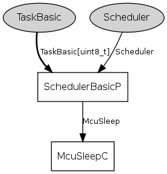

The TinyOS scheduler. It provides two interfaces: Scheduler, for TinyOS to initialize and run tasks, and TaskBasic, the simplext class of TinyOS tasks (reserved always at-most-once posting, FIFO, parameter-free). For details and information on how to replace the scheduler, refer to TEP 106.
